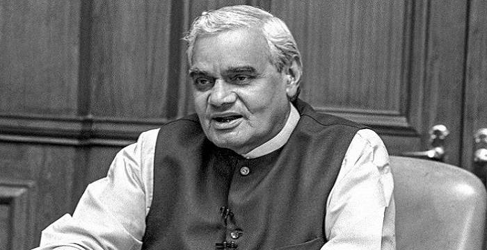
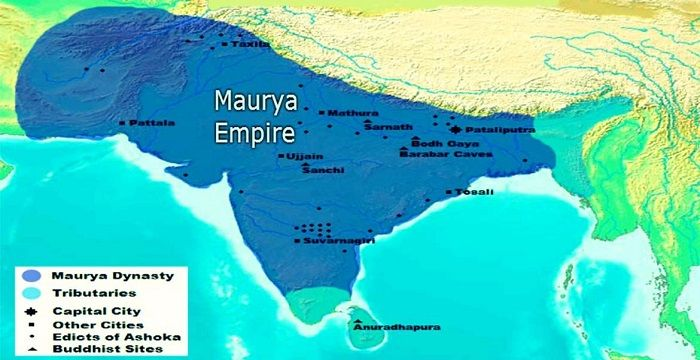
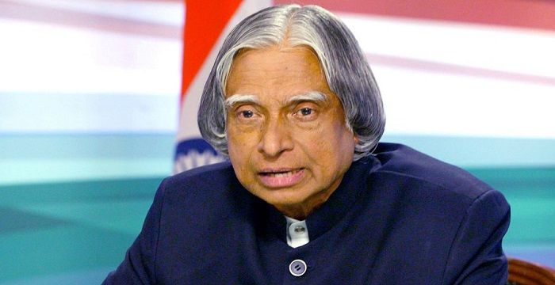
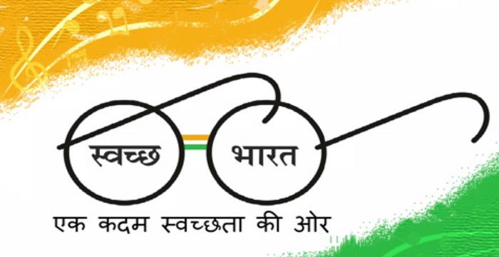
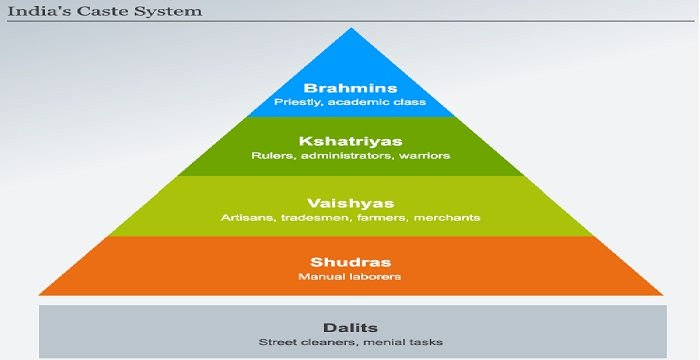

Culture Indian:Social Issues
Social Issues
The Indian society is the complex amalgamation of diverse cultures. Barriers of religions, language and traditions divide its people into innumerable sects and sometimes lead to incompatibility. Numerous instances of foreign invasions have let to plundering of its rich natural resources, plunging the country not only into economic downfall, but also causing hindrance to education and reforms. The two hundred years long oppressive British rule has in a way brought the country on the brink of social collapse that the citizens are still fighting after 69 years of Independence. Issues like population explosion leads to divergence of other socio-economic problems like poverty and unemployment. Lack of education and ignorance prevailing in rural areas are the reasons why issues like gender inequality, feticide and child labor have been prevailing since decades. It creates this vicious cycle of challenges that seem impossible to tackle. Incidents of violence against women and children and exploitative nature of the society in this aspect is a direct aftermath of the deep-rooted patriarchy. Social evils like the caste system, child marriage and dowry system act as huge deterrents towards the overall development of India. India is periodically plagued by a a host of religious, political and regional unrests that exerts intensely harmful effect on society as well as economy of the country. Moreover, owing to globalization, these issues garner a lot of negative media attention from all over the world. As a consequence of these social issues continuing, India is still to find universal credibility in international forums. To brand India as this truly developing nation, Indians need to take up eradication of these issues as their champion cause. Awareness is the first step towards addressing any social cause. For individuals to know the negative impacts of his actions that he so easily inflicts in the name of tradition is the foundation upon which remedial recourses can be built.
NOOR INAYAT KHAN
Noor Inayat Khan was a British spy and Special Operations Executive (SOE) agent who worked in Nazi-occupied France during World War II. Check out this biography to know more about her childhood, family life and other little-known facts.
SATI

Sati is a banned funeral custom, in which a widow either voluntarily or by compulsion self-immolates on her husband’s pyre, or commits suicide in some other manner, following her husband's death.
ATAL BIHARI VAJPAYEE
Atal Bihari Vajpayee was a former Prime Minister of India, and the first non-Congress Prime Minister to serve a full five-year term..
MAURYAN EMPIRE
Founded by Chandragupta Maurya, the Mauryan Empire dominated ancient India from 322 BCE to 187 BCE. Let’s take a look at its history, government, achievements and some interesting facts.
A.P.J ABDUL KALAM
Avul Pakir Jainulabdeen Abdul Kalam, better known as APJ Abdul Kalam, was an Indian scientist and statesman who served as the 11th President of India.
SWACHH BHARAT ABHIYAN
A comprehensive essay on Swachh Bharat Abhiyan (Clean India Mission), covering its objectives, initiatives, results, etc.
CASTE SYSTEM IN INDIA
An essay on the caste system in India, outlining its history, practices, legal provisions and acts, and its impact on society.
India is undoubtedly an embodiment of modern values and ancient customs. Its rich cultural heritage has been developed through centuries of assimilation of varied influences, resulting in a multidimensional melting pot of art, religion and philosophy. The acquired influences are interwoven in the Indian way of life and value system. The Indian subcontinent has been the cradle of civilization since 5000 BC, the lush fertile valleys of Indus and Ganges nurtured the Harappan civilization, which was way ahead of its time. The subsequent Aryan migrants acclimatized wholeheartedly and helped shape the Indian value system that we know today. The rich legacy of our country reverberated not just through India but spread across every nook and corner of the world. Author Will Durant enumerates India’s contributions to the modern world in his book ‘American Durant’, “India was the motherland of our race, and Sanskrit the mother of Europe’s languages: she was the mother of our philosophy; mother, through the Arabs, of much of our mathematics; mother, through the Buddha, of the ideals embodied in Christianity; mother, through the village community, of self-government and democracy. Mother India is in many ways the mother of us all.” “Unity in Diversity” is the much clichéd phrase used to elucidate the uniqueness of the Indian way of life, yet nothing could put forward the same so succinctly. It is not only the birthplace of Ayurveda, spirituality and popular religions like Hinduism, Buddhism and Jainism, but has even embraced he ideologies of Islam and Christianity with tolerance and flexibility, which speaks volumes about Indian religious pluralism. More than a hundred different languages spoken by the citizens of the country prove how diverse this nation. The customs, cuisines and style of clothing vary from state to state and fortunately this heritage has been preserved for several generations now. The spiritual doctrines of tolerance proposed by Mahatma Gandhi have been deeply embedded in the average Indian psyche and are being followed in other parts of the world as well.